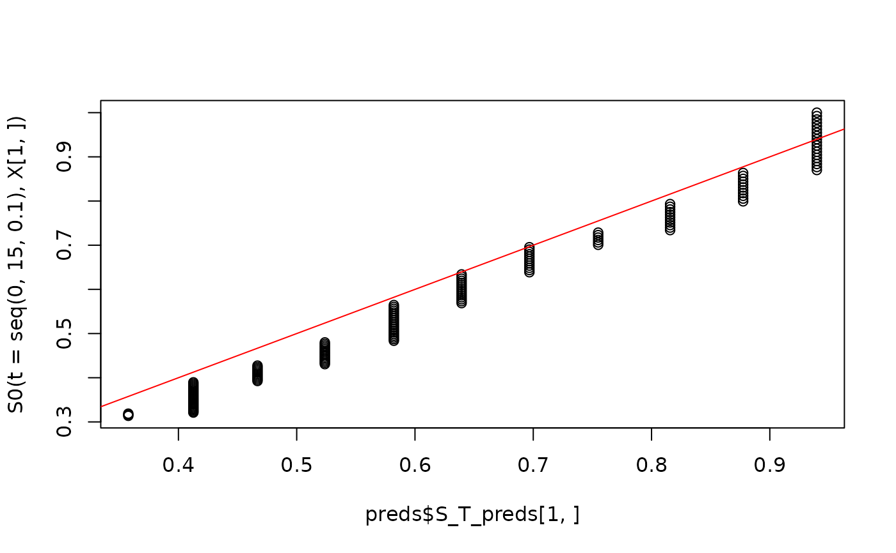

Obtain predicted conditional survival function from a local survival stacking object
Source:R/stackL.R
predict.stackL.RdObtain predicted conditional survival function from a local survival stacking object
Usage
# S3 method for class 'stackL'
predict(object, newX, newtimes, ...)Arguments
- object
Object of class
stackL- newX
m x pdata.frame of new observed covariate values at which to obtainmpredictions for the estimated algorithm. Must have the same names and structure asX.- newtimes
k x 1numeric vector of times at which to obtainkpredicted conditional survivals.- ...
Further arguments passed to or from other methods.
Value
A named list with the following components:
- S_T_preds
An
m x kmatrix of estimated event time survival probabilities at themcovariate vector values andktimes provided by the user innewXandnewtimes, respectively.
Examples
# This is a small simulation example
set.seed(123)
n <- 500
X <- data.frame(X1 = rnorm(n), X2 = rbinom(n, size = 1, prob = 0.5))
S0 <- function(t, x){
pexp(t, rate = exp(-2 + x[,1] - x[,2] + .5 * x[,1] * x[,2]), lower.tail = FALSE)
}
T <- rexp(n, rate = exp(-2 + X[,1] - X[,2] + .5 * X[,1] * X[,2]))
G0 <- function(t, x) {
as.numeric(t < 15) *.9*pexp(t,
rate = exp(-2 -.5*x[,1]-.25*x[,2]+.5*x[,1]*x[,2]),
lower.tail=FALSE)
}
C <- rexp(n, exp(-2 -.5 * X[,1] - .25 * X[,2] + .5 * X[,1] * X[,2]))
C[C > 15] <- 15
entry <- runif(n, 0, 15)
time <- pmin(T, C)
event <- as.numeric(T <= C)
sampled <- which(time >= entry)
X <- X[sampled,]
time <- time[sampled]
event <- event[sampled]
entry <- entry[sampled]
# Note that this a very small Super Learner library, for computational purposes.
SL.library <- c("SL.mean", "SL.glm")
fit <- stackL(time = time,
event = event,
entry = entry,
X = X,
newX = X,
newtimes = seq(0, 15, .1),
direction = "prospective",
bin_size = 0.1,
time_basis = "continuous",
SL_control = list(SL.library = SL.library,
V = 5))
preds <- predict(object = fit,
newX = X,
newtimes = seq(0, 15, 0.1))
plot(preds$S_T_preds[1,], S0(t = seq(0, 15, .1), X[1,]))
abline(0,1,col='red')
